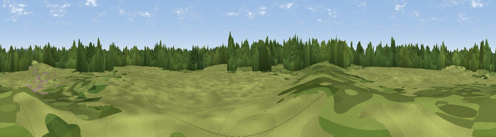

Fowemer Hill
#43823 in England · top 95% of its area beats it · near RuddingtonWhere it is
The exact computed spot (SK 57074 32034). Click the marker for map links.
The view, rendered

A 360° render of this exact spot computed from the terrain model, tree cover and land cover — summer colours, afternoon light, calibrated against photographs of famous viewpoints. Real trees, hedges and buildings will differ in detail.
The panorama
Grey silhouette: terrain skyline in each direction (720 bearings, Earth curvature and refraction included). Dashed green: skyline with trees (+15 m) and buildings (+8 m) as obstacles. Blue strip: how far the ground is visible on each bearing.
Where the view opens
Wedge length = distance to the farthest visible ground on that bearing (vegetation-aware). Rings at 10, 25 and 50 km.
What fills the view
42% grassland · 40% woodland · 10% cropland · 7% built-up
Angular shares of the visible panorama (visual magnitude), not map area. Landscape diversity 0.51 (0–1 Shannon).
Key numbers
More beautiful places nearby
The staircase of upgrades: each row has a higher view potential than everything closer. Driving times are estimates from straight-line distance, calibrated against real road routing — check an actual route before setting out.
| Place | Direction | Drive | Score |
|---|---|---|---|
| Viewpoint near Ruddington | NNE · 2 km | ~6 min | 47.9 |
| Viewpoint near Bunny | SSE · 4 km | ~9 min | 50.4 |
| Brands Hill | WNW · 4 km | ~9 min | 57.9 |
| Viewpoint near Gotham | WSW · 4 km | ~9 min | 60.1 |
| Viewpoint near Strelley | NW · 11 km | ~21 min | 62.6 |
| No Man's Lane | WNW · 12 km | ~23 min | 65.8 |
| Ives Head | SSW · 18 km | ~31 min | 73.3 |
| Viewpoint near Woodhouse Eaves | SSW · 18 km | ~32 min | 77.7 |
52.88275, -1.15330 · source: osm peak · position refined by local search. Computed location — check access rights before visiting.